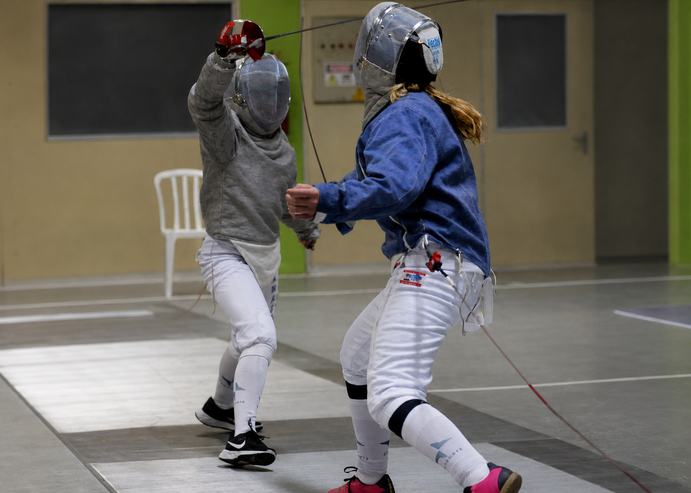
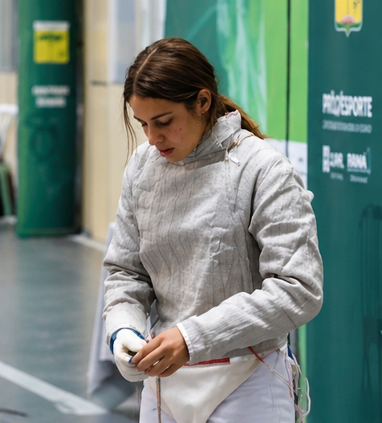
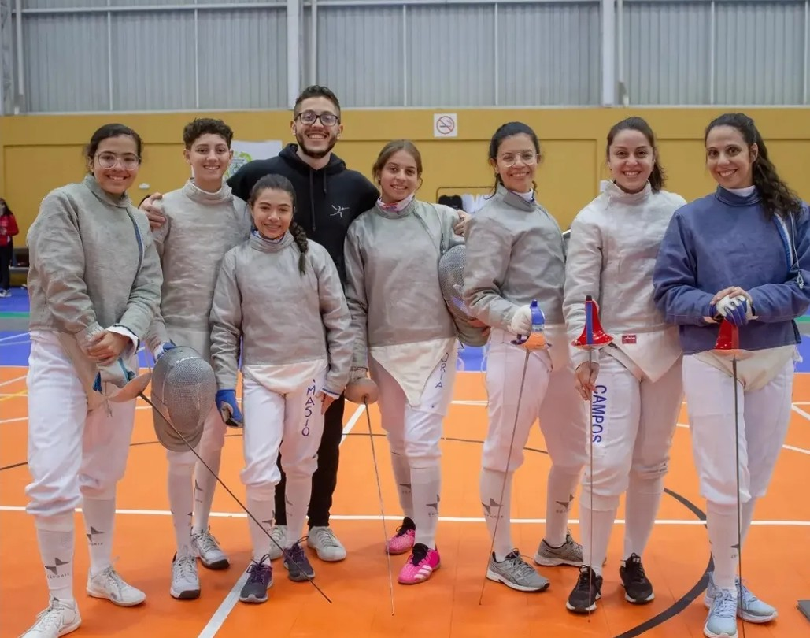
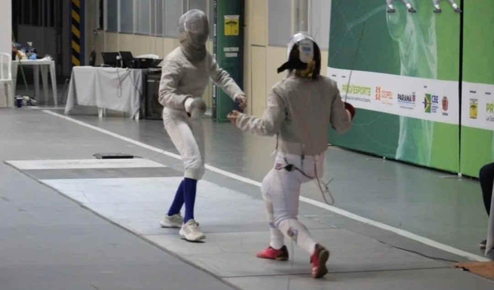
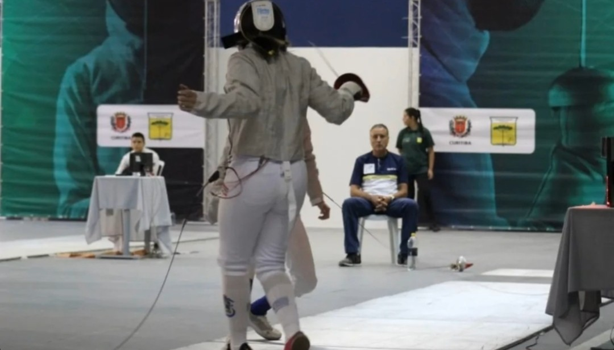

Nesta página estão registrados alguns momentos da minha trajetória na esgrima, incluindo treinos, competições e experiências que contribuíram para o meu desenvolvimento como atleta. Cada imagem representa etapas importantes da minha evolução dentro do esporte e dos desafios enfrentados ao longo da jornada.




